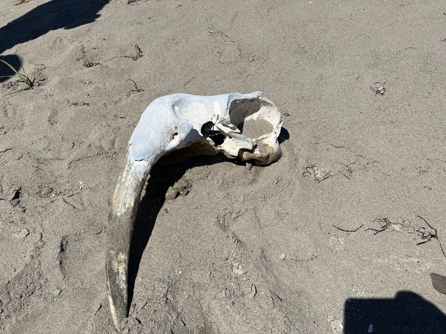

哺乳动物 · 动物界
海象 Odobenus rosmarus

北极海域的大型鳍足类，雄兽的上犬齿长成不断生长的獠牙，用獠牙攀爬冰面，胡须可感知海底贝类。
- 分类
- 门脊索动物门纲哺乳纲目食肉目科海象科属海象属
- 栖息环境
- 北极与亚北极的浅海、浮冰和海岸，偏好贝类丰富的浅水区
- 地理分布
- 北极和亚北极海域，从加拿大、格陵兰到俄罗斯北部和阿拉斯加
- 保护级别
- IUCN 易危（VU）；CITES 附录Ⅱ
物种志
海象体长 2.2–3.6 米，体重 400–1700 kg，雄性大于雌性，是体型最大的鳍足类之一。它的皮肤厚而粗糙，呈粉褐至黄褐色，成年雄兽颈部和肩部皮肤布满结节；上犬齿长成两根长长的獠牙，雄兽獠牙可达 1 米，雌兽稍短。
海象分布于北极和亚北极海域，从加拿大、格陵兰、斯瓦尔巴到俄罗斯北部和阿拉斯加，栖息于浅海、浮冰和海岸。它以海底的蛤蜊、螺类等贝类为食，用胡须感知泥沙中的贝类，再用嘴唇和舌头把肉吸出；獠牙用于攀爬冰面、防御和展示。海象结成数十至数千只的大群，在冰上或岸上休息，雄性通过獠牙和声音争夺地位。雌兽妊娠期约 15–16 个月，每胎 1 仔。气候变暖导致海冰减少，海象的休息平台和觅食区受到威胁，被列为易危。
形态与习性
- 食性海底蛤蜊、螺类等贝类
- 体长2.2–3.6 m，雄性大于雌性
- 体重400–1700 kg
- 寿命约 30–40 年
- 繁殖妊娠期约 15–16 个月，每胎 1 仔
- 獠牙雄兽獠牙可达 1 m，终生生长
- 感知胡须可感知泥沙中的贝类
趣味知识
- 海象的獠牙是不断生长的上犬齿，可用来攀爬冰面。
- 它用敏感的胡须感知泥沙中的贝类，再吸出贝肉。
- 海象能结成数千只的大群，在冰面或岸上休息。
- 海象皮肤厚而粗糙，雄兽颈肩部布满结节。